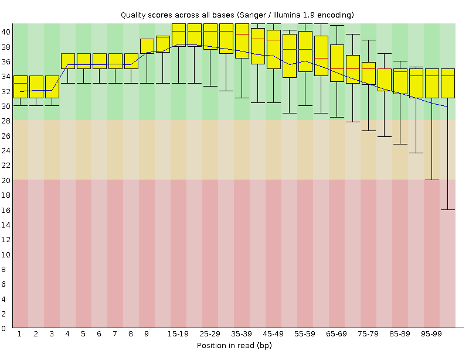
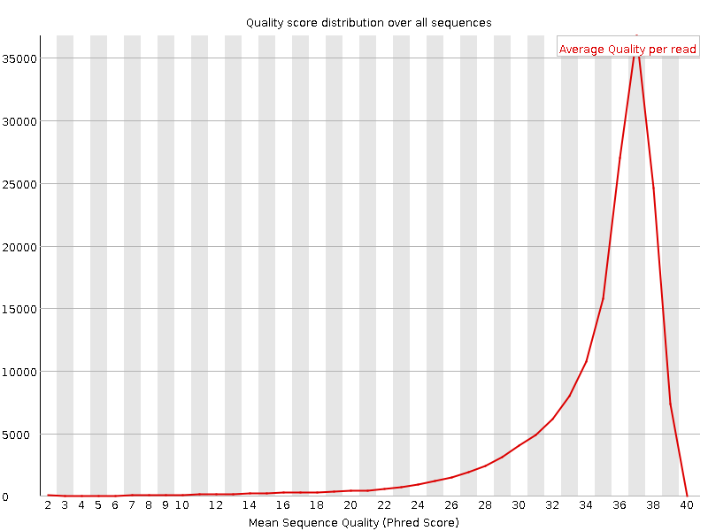
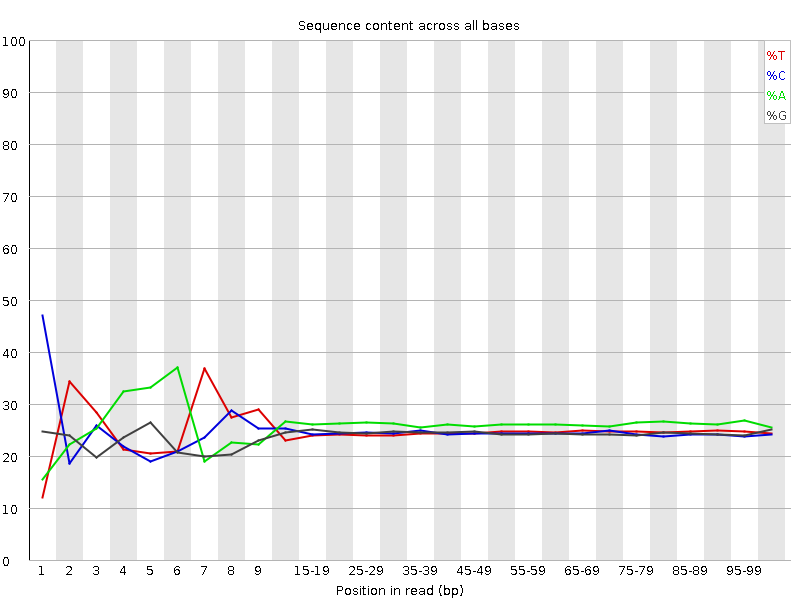
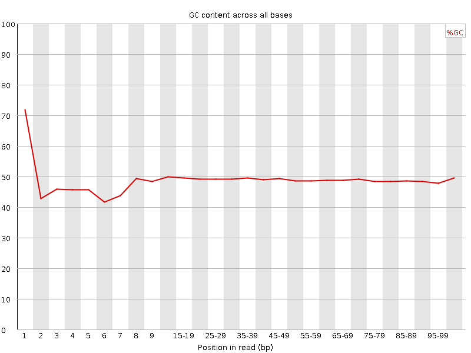
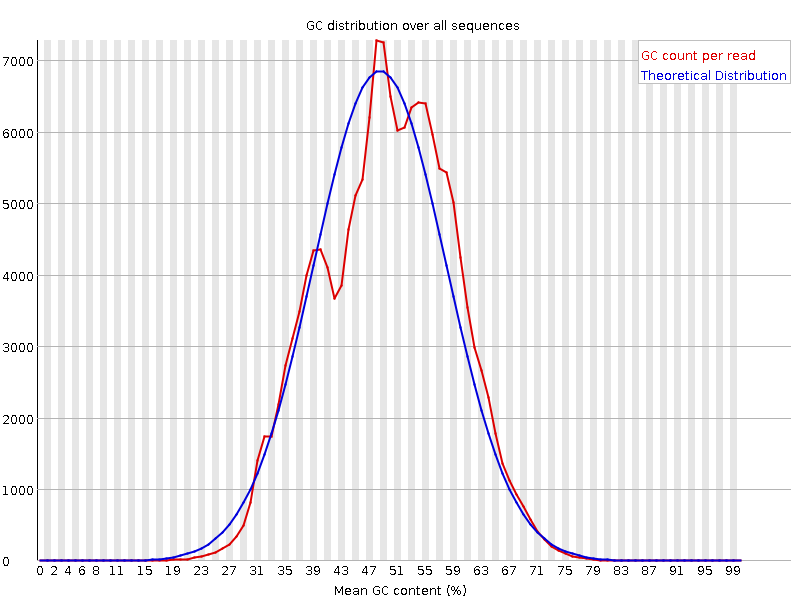
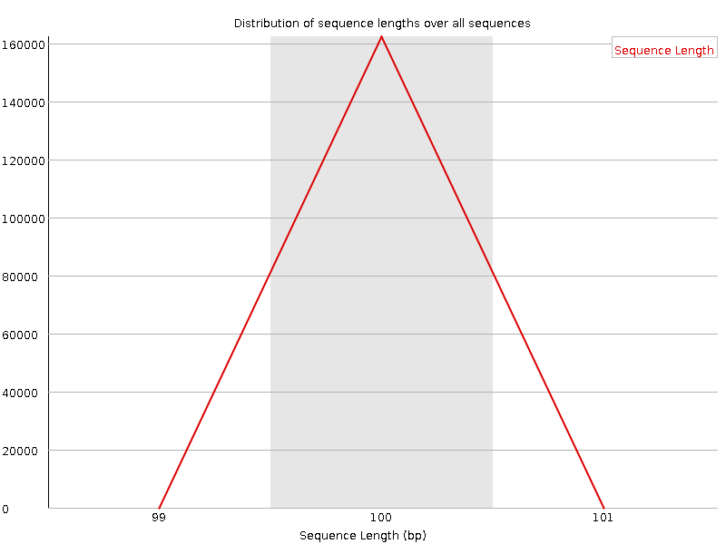
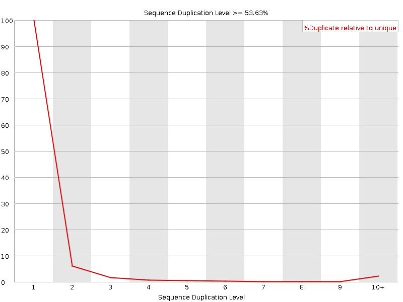
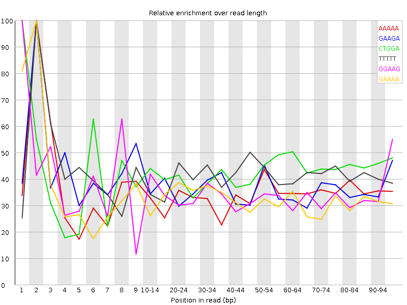

![[OK]](Icons/tick.png) Basic Statistics
Basic Statistics
| Measure | Value |
|---|---|
| Filename | Sample-B_Rep2.R2.fastq.gz |
| File type | Conventional base calls |
| Encoding | Sanger / Illumina 1.9 |
| Total Sequences | 162373 |
| Filtered Sequences | 0 |
| Sequence length | 100 |
| %GC | 49 |
Per base sequence quality

Per sequence quality scores

![[FAIL]](Icons/error.png) Per base sequence content
Per base sequence content

Per base GC content

![[WARN]](Icons/warning.png) Per sequence GC content
Per sequence GC content

Per base N content

Sequence Length Distribution

Sequence Duplication Levels

Overrepresented sequences
| Sequence | Count | Percentage | Possible Source |
|---|---|---|---|
| CTTCAATATAAGCCTTGGTAGGGATAGATAGCCACCTATATAGTATAGCT | 682 | 0.42002056992233927 | No Hit |
| CTCGTAACCAAACATGCACAGCGGTCAAACAGTATGTCCCAAGGGGACTT | 409 | 0.2518891687657431 | No Hit |
| CTTAGATATTTTAAAGAGGCATCTATCACATAAGGCATCATTATAACTAA | 358 | 0.22048000591231304 | No Hit |
| CGAATAGCTCGTAACCAAACATGCACAGCGGTCAAACAGTATGTCCCAAG | 316 | 0.19461363650360589 | No Hit |
| TGAAAATTCTATGGAAGAGCTAGCATCTCTGACGAAAACAGCAGACGGAA | 289 | 0.17798525616943706 | No Hit |
| CCTAACTTAATGGACGGGAGGTATCCCAATAGGAGGTTTCCTCCTATGGT | 287 | 0.17675352429283195 | No Hit |
| CTAGCATCTCTGACGAAAACAGCAGACGGAAAAGTACTGACCAGCGTCAC | 265 | 0.16320447365017582 | No Hit |
| CAAAAACGGAACAGGGCTGACGCCGCTACATATATAGGAAAAGGGAAGGT | 243 | 0.14965542300751972 | No Hit |
| CCCTAACTTAATGGACGGGAGGTATCCCAATAGGAGGTTTCCTCCTATGG | 242 | 0.14903955706921718 | No Hit |
| CAGAAATCGCATTCATGAAATCAACACACAGCTTTCCACTGTCATTCGCC | 234 | 0.14411262956279677 | No Hit |
| CGAAACTGGAAACCGACCGCCGCCATATCAGAAATCGCATTCATGAAATC | 231 | 0.14226503174788913 | No Hit |
| CCCAATTATCCATAAAACTGTAACTAAGTGAGGCTCTCTCATTGGTTTAT | 226 | 0.13918570205637637 | No Hit |
| CTCTCATTGGTTTATACTTCAATATAAGCCTTGGTAGGGATAGATAGCCA | 225 | 0.13856983611807383 | No Hit |
| CTCATCTTTAATGATGAACTGTCGCCAAGTCAGCTGAAGTCATTGGCAAC | 225 | 0.13856983611807383 | No Hit |
| CTTCCATTTCCGCCCAAGCTGCTCACAGTATACGGGCGTCGGCATCCAGA | 224 | 0.1379539701797713 | No Hit |
| CTAACTTAATGGACGGGAGGTATCCCAATAGGAGGTTTCCTCCTATGGTT | 207 | 0.12748424922862792 | No Hit |
| CTTGAAGCTGATCTCCTCATCTTTAATGATGAACTGTCGCCAAGTCAGCT | 202 | 0.12440491953711516 | No Hit |
| CTTCAAATTGCGCTTGTCGGCTATACAAACGCAGGGAAATCAACATGGTT | 197 | 0.1213255898456024 | No Hit |
| CAGCAATTGAAGTGAAGATGATTGACCGCACGCAATTGATATTAGATATT | 188 | 0.11578279640087946 | No Hit |
| CTGTAACTAAGTGAGGCTCTCTCATTGGTTTATACTTCAATATAAGCCTT | 185 | 0.11393519858597181 | No Hit |
| CATTAATTAGGGCTGAAAGCCCTAACTTAATGGACGGGAGGTATCCCAAT | 184 | 0.11331933264766925 | No Hit |
| GGAAGAGCTAGCATCTCTGACGAAAACAGCAGACGGAAAAGTACTGACCA | 184 | 0.11331933264766925 | No Hit |
| CGGAAAAGTACTGACCAGCGTCACACAAAAACGGAACAGGGCTGACGCCG | 184 | 0.11331933264766925 | No Hit |
| TATAGATTGGCGCTAGTAGATCACAGAACAACCGCCGCATACGGCCGATT | 184 | 0.11331933264766925 | No Hit |
| GGCCGATTGTCGCAGCCCGGGTCGATTATAACAACGGTGCAATCTCAGCT | 173 | 0.1065448073263412 | No Hit |
| CTCTCTCATTGGTTTATACTTCAATATAAGCCTTGGTAGGGATAGATAGC | 167 | 0.1028496116965259 | No Hit |
Kmer Content

| Sequence | Count | Obs/Exp Overall | Obs/Exp Max | Max Obs/Exp Position |
|---|---|---|---|---|
| AAAAA | 50300 | 2.568704 | 7.427256 | 2 |
| GAAGA | 38685 | 2.293696 | 6.261172 | 2 |
| CTGGA | 33210 | 2.2393014 | 5.2108583 | 1 |
| TTTTT | 31355 | 2.2043686 | 5.298059 | 2 |
| GGAAG | 33540 | 2.1427913 | 6.2558556 | 1 |
| GAAAA | 36630 | 2.0156102 | 6.127698 | 2 |
| TTCAA | 30265 | 1.8737147 | 9.628254 | 2 |
| CTTCT | 25995 | 1.8302188 | 5.981721 | 1 |
| AATTG | 29105 | 1.8199935 | 5.3427143 | 5 |
| CTCAG | 27260 | 1.819827 | 6.9855475 | 1 |
| CTTCA | 27090 | 1.7891878 | 11.412719 | 1 |
| CAGAA | 30195 | 1.7725109 | 5.1282 | 1 |
| CTCTG | 23920 | 1.7022827 | 5.0214314 | 1 |
| ATTGG | 24915 | 1.6787529 | 5.5304656 | 6 |
| CTGAA | 26770 | 1.675207 | 5.3466263 | 1 |
| CCCAA | 26800 | 1.6616262 | 6.2496767 | 1 |
| CTGAG | 23755 | 1.6017649 | 5.243224 | 1 |
| CTTGG | 20845 | 1.4983453 | 5.278872 | 1 |
| ATATA | 25740 | 1.4937818 | 5.2926354 | 6 |
| CTCAT | 22295 | 1.472497 | 5.1040215 | 1 |
| TATTT | 22030 | 1.4528664 | 5.2548337 | 7 |
| AATAT | 23475 | 1.362336 | 6.657578 | 5 |
| AGATA | 22690 | 1.3309767 | 5.0681353 | 4 |
| CTTTT | 18460 | 1.2987543 | 5.3694787 | 1 |
| TAGAT | 20090 | 1.2562677 | 6.033065 | 3 |
| AATTC | 17770 | 1.1001457 | 5.0815783 | 5 |
| TATAA | 18830 | 1.0927705 | 6.2675943 | 7 |
| CAATA | 18495 | 1.0741152 | 5.212881 | 4 |
| GATTG | 15855 | 1.0682971 | 5.5304646 | 5 |
| ATAAG | 16880 | 0.9901669 | 5.4343348 | 8 |
| CTCGT | 12070 | 0.85896957 | 6.0803733 | 1 |
| TCAAT | 12200 | 0.7553054 | 5.5867643 | 3 |
| TAAGC | 11875 | 0.7431111 | 5.436905 | 9 |